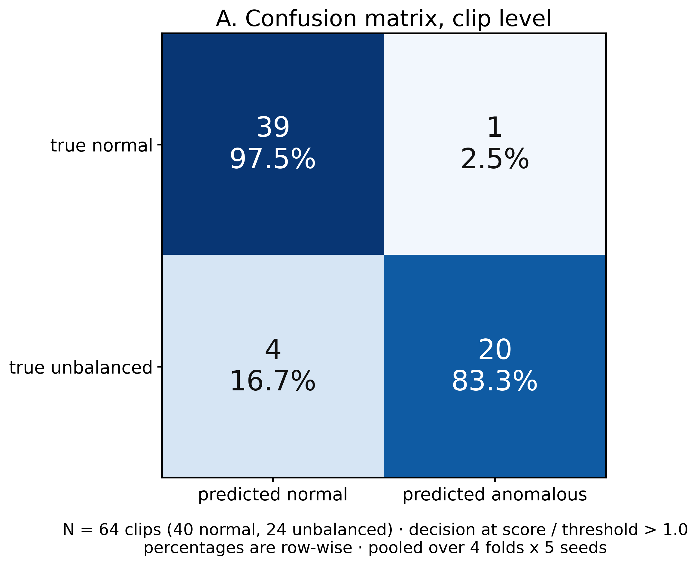
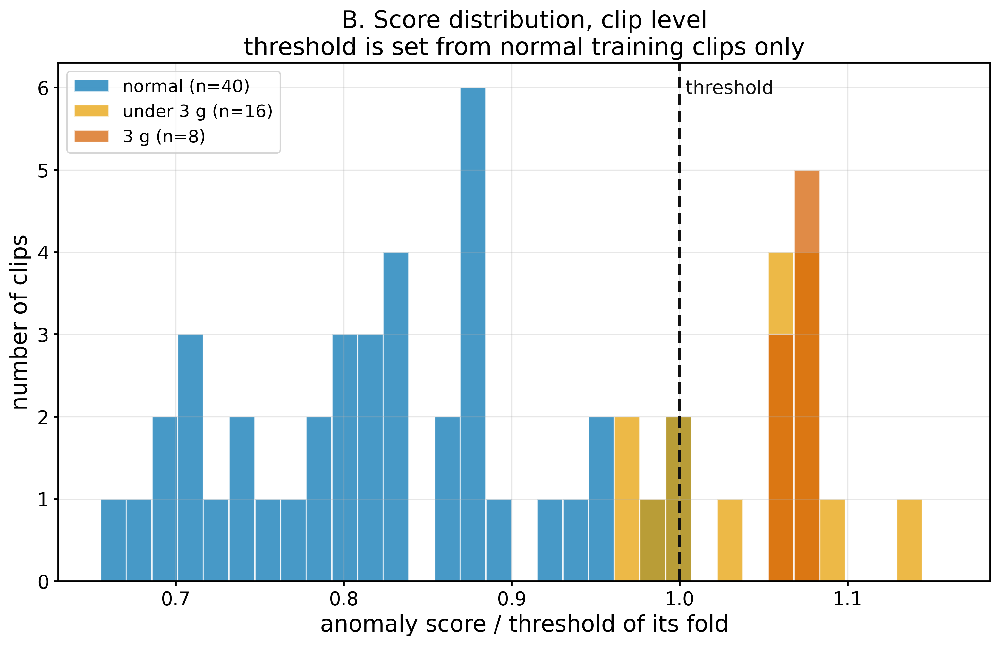
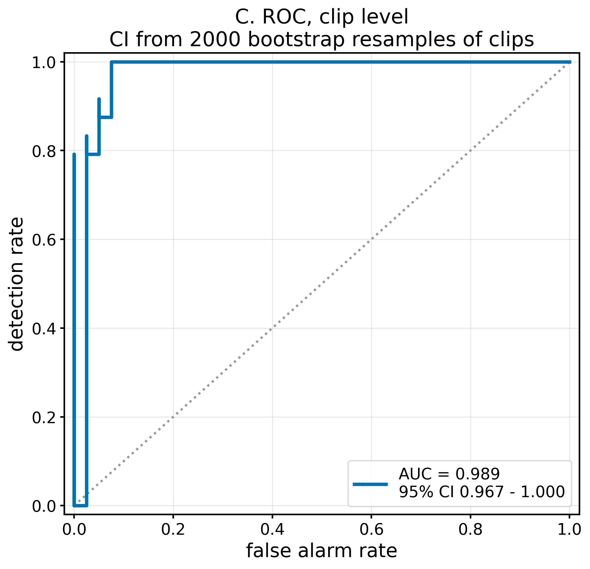
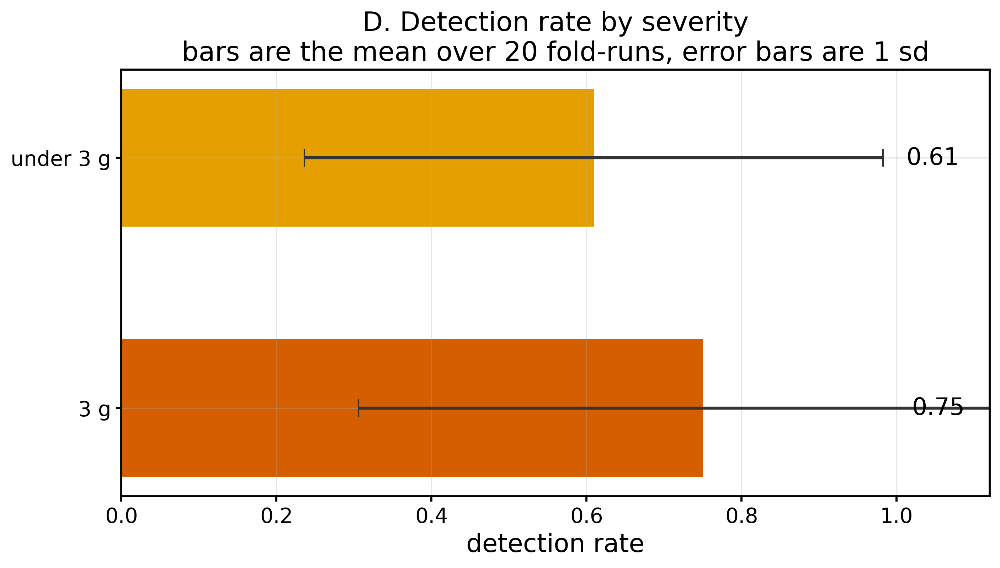
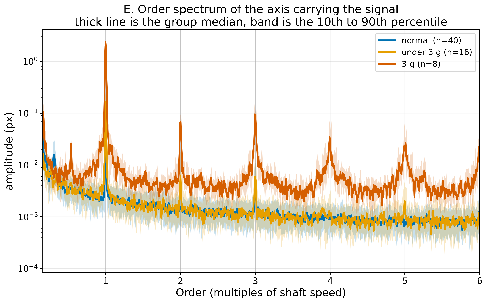
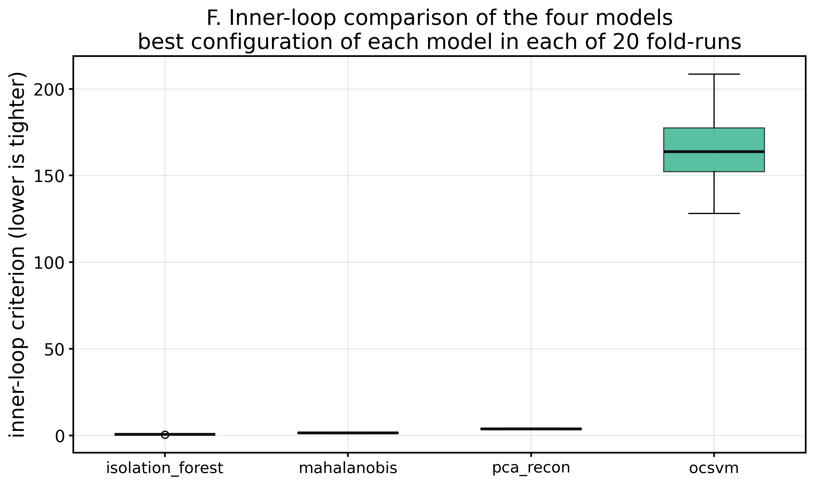
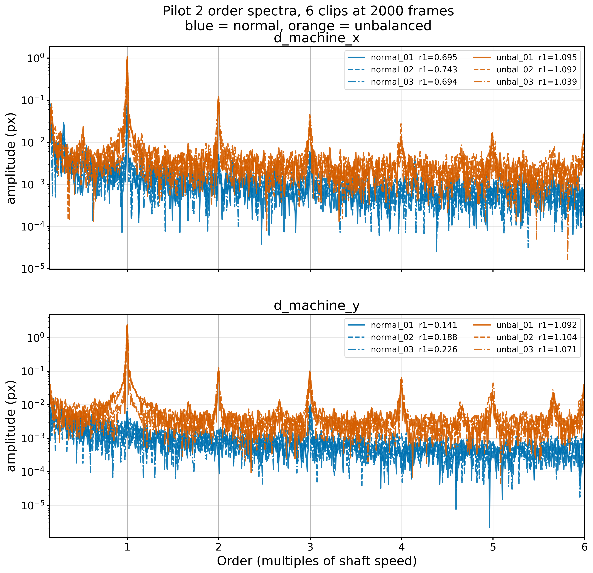

ขอบเขตของระบบ ตรวจได้เฉพาะ ความไม่สมดุลของมวลหมุน อย่างเดียวเท่านั้น
ชุดข้อมูลไม่มีฐานหลวม การอุดตัน หรือการเสียดสี จึงไม่ประเมินและไม่รายงานชนิดเหล่านั้นในทุกกรณี
หน้านี้แสดง ผลที่บันทึกไว้จากการรันจริง ทุกตัวเลขและทุกรูปมาจากคลิปวิดีโอจริง 64 คลิป
ไม่มีข้อมูลสมมติ ไม่มีการปัดตัวเลขให้สวย
หน้านี้ไม่ใช่ตัวโปรแกรม เพราะโปรแกรมจริงเป็น Python ที่ต้องถอดรหัสวิดีโอ จึงรันบน GitHub Pages ไม่ได้
วิธีรันตัวจริงอยู่ท้ายหน้า
ผลการวัด
ROC-AUC ระดับคลิป
0.9885
95% CI 0.9667 – 1.0000 · bootstrap 2000 รอบ
อัตราแจ้งเตือนผิดพลาด
0.96 %
คิดจากคลิปปกติเท่านั้น ≈ 1.3 ครั้งต่อสัปดาห์ ถ้าตรวจ 20 เครื่องต่อวัน
ความละเอียดที่วัดได้
19.5
ไมโครเมตร · สอบเทียบด้วยไม้บรรทัดในเฟรม
เวลาต่อคลิป
7.7
วินาที ต่อ 2000 เฟรม · เป้าหมาย 12 วินาที
ห้ามอ่านเป็น accuracy ชุดทดสอบมีปกติ 40 ผิดปกติ 24 ซึ่งเกือบสมดุล
แต่โรงงานจริงเครื่องปกติเกือบตลอดเวลา ค่า accuracy จะสูงเกินจริงมาก
จึงรายงานอัตราตรวจพบกับอัตราแจ้งเตือนผิดพลาดแยกกันเสมอ
อัตราตรวจพบแยกตามระดับความรุนแรง
| กลุ่ม | จำนวนคลิป | อัตราตรวจพบ | แอมพลิจูดที่ 1× | ความเร็วรอบ |
|---|---|---|---|---|
| normal | 40 | 0.0096 ± 0.0246 | 16.48 µm | 19.026 Hz |
| under 3 g | 16 | 0.6094 ± 0.3733 | 67.89 µm | 18.735 Hz |
| 3 g | 8 | 0.75 ± 0.4443 | 966.93 µm | 18.105 Hz |
ทำไมกลุ่มต่ำกว่า 3 กรัมถึงตรวจพบได้น้อยกว่า
คลิปที่พลาดมีการสั่นที่ 21–27 µm ซึ่งอยู่ในพิสัยเดียวกับเครื่องปกติ (4–41 µm)
และสูงกว่าขีดจำกัดของกล้องเพียง 1.1–1.4 เท่า
ที่ 389 µm ต่อพิกเซล การสั่น 25 µm คือการขยับเพียง 0.064 พิกเซล
นี่คือขีดจำกัดทางฟิสิกส์ของการจัดเฟรมชุดนี้ ไม่ใช่ข้อบกพร่องของโมเดล แก้ได้ด้วยการซูมเข้า
ผลแยกตามรอบการถ่ายที่กันไว้ทดสอบ
แบ่งข้อมูลตามรอบการถ่าย ไม่ใช่ตามคลิป เพื่อไม่ให้โมเดลจำการตั้งกล้องแทนที่จะจำสภาวะเครื่อง
| รอบที่กันไว้ | คลิปปกติที่เหลือไว้ฝึก | AUC | แจ้งเตือนผิด | ตรวจพบ 3 ก. | ตรวจพบ <3 ก. |
|---|---|---|---|---|---|
| S1 | 14 | 0.7692 | 0.0385 | 0.000 | 0.000 |
| S2 | 35 | 1.0000 | 0.0000 | 1.000 | 0.887 |
| S3 | 36 | 1.0000 | 0.0000 | 1.000 | 0.800 |
| S4 | 35 | 0.9967 | 0.0000 | 1.000 | 0.750 |
รอบ S1 ตรวจไม่พบอะไรเลย และเราไม่ซ่อนข้อนี้
คลิปปกติ 26 จาก 40 คลิปกระจุกอยู่ในรอบถ่ายเดียว พอกันรอบนั้นไว้ทดสอบก็เหลือคลิปฝึกแค่ 14 คลิป
ซึ่งต่ำกว่าขั้นต่ำ 20 คลิปที่ระบบกำหนดไว้เอง เกณฑ์จึงสูงเกินไปจนไม่มีอะไรผ่าน
ตัวเลขพาดหัวคือค่าเฉลี่ยจากทั้ง 4 รอบ ไม่ใช่เฉพาะรอบที่ผลดี
ปัญหาอยู่ที่การเก็บข้อมูล ไม่ใช่ที่โมเดล
โมเดลที่ถูกเลือก
วงในของ nested CV เลือกจากคลิปปกติล้วน ไม่เคยเห็นคลิปผิดปกติ
| โมเดล | ค่าเกณฑ์วงใน (ต่ำ = ดี) | ถูกเลือกกี่ครั้งจาก 20 |
|---|---|---|
| isolation_forest | 0.59313 ± 0.07385 | 20/20 |
| mahalanobis | 1.32879 ± 0.28948 | 0/20 |
| pca_recon | 3.77469 ± 0.33298 | 0/20 |
| ocsvm | 166.00971 ± 29.40164 | 0/20 |
รูปทั้งหมด
A · Confusion matrix ระดับคลิป

B · การกระจายของคะแนน

C · ROC curve

D · อัตราตรวจพบแยกตามระดับความรุนแรง

E · สเปกตรัมแกน order

F · เปรียบเทียบโมเดลทั้งสี่

Pilot รอบ 2 · สเปกตรัมแกน order

ผลรายคลิปทั้ง 64 คลิป
คะแนนต่อเกณฑ์เกิน 1.000 คือถูกตัดสินว่าผิดปกติ
| คลิป | กลุ่ม | รอบถ่าย | f0 (Hz) | A1 (µm) | คะแนน/เกณฑ์ | ผล |
|---|---|---|---|---|---|---|
| IMG_8436 | 3g | S5 | 18.12 | 946.26 | 1.07342 | ผิดปกติ |
| IMG_8437 | 3g | S5 | 18.12 | 1031.59 | 1.05839 | ผิดปกติ |
| IMG_8438 | 3g | S5 | 18.12 | 1062.62 | 1.06162 | ผิดปกติ |
| IMG_8439 | 3g | S5 | 18.12 | 953.32 | 1.08104 | ผิดปกติ |
| IMG_8440 | 3g | S5 | 18.0 | 924.47 | 1.06925 | ผิดปกติ |
| IMG_8441 | 3g | S5 | 18.12 | 984.98 | 1.0719 | ผิดปกติ |
| IMG_8442 | 3g | S5 | 18.12 | 853.6 | 1.08067 | ผิดปกติ |
| IMG_8443 | 3g | S5 | 18.12 | 978.63 | 1.06377 | ผิดปกติ |
| IMG_8390 | normal | S1 | 18.96 | 14.43 | 0.88206 | ปกติ |
| IMG_8391 | normal | S1 | 18.84 | 14.29 | 0.95288 | ปกติ |
| IMG_8392 | normal | S1 | 18.84 | 12.73 | 1.00589 | ผิดปกติ |
| IMG_8393 | normal | S1 | 18.96 | 14.56 | 0.87298 | ปกติ |
| IMG_8394 | normal | S1 | 19.08 | 16.28 | 0.99815 | ปกติ |
| IMG_8395 | normal | S1 | 19.08 | 18.19 | 0.93922 | ปกติ |
| IMG_8396 | normal | S1 | 18.96 | 17.95 | 0.89958 | ปกติ |
| IMG_8397 | normal | S1 | 18.96 | 33.19 | 0.8004 | ปกติ |
| IMG_8398 | normal | S1 | 18.96 | 17.11 | 0.92584 | ปกติ |
| IMG_8399 | normal | S1 | 18.96 | 18.2 | 0.79273 | ปกติ |
| IMG_8400 | normal | S1 | 18.96 | 29.75 | 0.81739 | ปกติ |
| IMG_8401 | normal | S1 | 18.96 | 17.67 | 0.82621 | ปกติ |
| IMG_8402 | normal | S1 | 19.08 | 6.19 | 0.80002 | ปกติ |
| IMG_8403 | normal | S1 | 18.96 | 36.74 | 0.82681 | ปกติ |
| IMG_8404 | normal | S1 | 19.08 | 14.64 | 0.87809 | ปกติ |
| IMG_8405 | normal | S1 | 19.08 | 4.91 | 0.70729 | ปกติ |
| IMG_8406 | normal | S1 | 19.08 | 9.29 | 0.88208 | ปกติ |
| IMG_8407 | normal | S1 | 19.08 | 40.97 | 0.85773 | ปกติ |
| IMG_8408 | normal | S1 | 19.08 | 9.89 | 0.83027 | ปกติ |
| IMG_8409 | normal | S1 | 18.96 | 23.59 | 0.88163 | ปกติ |
| IMG_8410 | normal | S1 | 19.08 | 5.74 | 0.7611 | ปกติ |
| IMG_8411 | normal | S1 | 18.96 | 6.26 | 0.83219 | ปกติ |
| IMG_8412 | normal | S1 | 19.08 | 7.32 | 0.88449 | ปกติ |
| IMG_8413 | normal | S1 | 19.08 | 17.98 | 0.77074 | ปกติ |
| IMG_8414 | normal | S1 | 19.08 | 14.98 | 0.98193 | ปกติ |
| IMG_8415 | normal | S1 | 19.08 | 13.92 | 0.81756 | ปกติ |
| IMG_8418 | normal | S3 | 19.08 | 19.71 | 0.81561 | ปกติ |
| IMG_8419 | normal | S4 | 19.08 | 18.93 | 0.66873 | ปกติ |
| IMG_8420 | normal | S4 | 19.08 | 15.65 | 0.70008 | ปกติ |
| IMG_8421 | normal | S4 | 19.08 | 4.32 | 0.95169 | ปกติ |
| IMG_8422 | normal | S4 | 19.08 | 15.36 | 0.73261 | ปกติ |
| IMG_8423 | normal | S4 | 19.08 | 17.34 | 0.67601 | ปกติ |
| IMG_8424 | normal | S3 | 19.08 | 16.04 | 0.77819 | ปกติ |
| IMG_8425 | normal | S3 | 19.08 | 16.95 | 0.86654 | ปกติ |
| IMG_8426 | normal | S3 | 18.96 | 15.03 | 0.73348 | ปกติ |
| IMG_8427 | normal | S2 | 19.08 | 15.57 | 0.70089 | ปกติ |
| IMG_8428 | normal | S2 | 19.08 | 18.06 | 0.70246 | ปกติ |
| IMG_8429 | normal | S2 | 19.08 | 16.66 | 0.71483 | ปกติ |
| IMG_8431 | normal | S2 | 18.96 | 16.59 | 0.79619 | ปกติ |
| IMG_8432 | normal | S2 | 18.96 | 16.35 | 0.71662 | ปกติ |
| IMG_8444 | under3g | S6 | 19.08 | 61.96 | 1.13713 | ผิดปกติ |
| IMG_8445 | under3g | S6 | 18.96 | 21.34 | 1.00159 | ผิดปกติ |
| IMG_8446 | under3g | S6 | 18.84 | 23.87 | 1.02649 | ผิดปกติ |
| IMG_8447 | under3g | S6 | 18.96 | 22.23 | 0.9847 | ปกติ |
| IMG_8448 | under3g | S6 | 18.84 | 25.65 | 0.97396 | ปกติ |
| IMG_8449 | under3g | S6 | 18.84 | 25.17 | 0.96456 | ปกติ |
| IMG_8450 | under3g | S6 | 18.84 | 27.33 | 0.99761 | ปกติ |
| IMG_8451 | under3g | S6 | 18.96 | 21.1 | 1.05996 | ผิดปกติ |
| IMG_8453 | under3g | S6 | 18.48 | 109.24 | 1.07454 | ผิดปกติ |
| IMG_8454 | under3g | S6 | 18.6 | 106.54 | 1.07362 | ผิดปกติ |
| IMG_8455 | under3g | S6 | 18.6 | 76.73 | 1.0654 | ผิดปกติ |
| IMG_8456 | under3g | S6 | 18.6 | 82.09 | 1.05428 | ผิดปกติ |
| IMG_8457 | under3g | S6 | 18.6 | 84.53 | 1.06194 | ผิดปกติ |
| IMG_8458 | under3g | S6 | 18.48 | 126.48 | 1.07274 | ผิดปกติ |
| IMG_8459 | under3g | S6 | 18.6 | 136.36 | 1.07735 | ผิดปกติ |
| IMG_8460 | under3g | S6 | 18.48 | 135.63 | 1.08495 | ผิดปกติ |
วิธีรันโปรแกรมตัวจริง
เว็บแอปเป็น Python FastAPI ที่ทำงานบนเครื่องของผู้ใช้ ไม่ต้องต่ออินเทอร์เน็ตขณะใช้งาน
git clone https://github.com/TEAMNAJAA/ironpulse-zero.git cd ironpulse-zero/ironpulse pip install fastapi uvicorn python-multipart numpy scipy scikit-learn opencv-python pyyaml imageio-ffmpeg matplotlib python web/seed_demo.py python run.py
เปิดเบราว์เซอร์ให้อัตโนมัติที่ http://127.0.0.1:8765/
คลิปวิดีโอไม่ได้อยู่ใน repo เพราะไฟล์ละราว 100 MB
แต่ ironpulse/h4/tracks.npz และ features.npz อยู่ครบ
จึงรัน run_nested_cv.py กับ evaluate.py ซ้ำเพื่อสร้างผลและรูปทั้งหมดใหม่ได้โดยไม่ต้องมีวิดีโอ
เอกสาร
- H4_REPORT.md วิธีเลือกโมเดลและการประเมินผลฉบับเต็ม พร้อมทุกข้อที่ทำไม่ได้ตามสเปกและเหตุผล
- POSTER_NUMBERS.md ประโยคที่ยกไปวางบนโปสเตอร์ได้ พร้อมรายการตัวเลขที่ห้ามใช้
- H5_REPORT.md รายงานเว็บแอปและผลเกณฑ์ตรวจรับ 10 ข้อ
- STATE.md สถานะโปรเจกต์ทั้งหมด บั๊กที่แก้แล้ว และข้อที่ยังค้างการตัดสินใจ
ความซื่อตรงของตัวเลข
- โมเดลเรียนจากคลิปเครื่องปกติเท่านั้น ไม่เคยเห็นคลิปผิดปกติตอนฝึก
- เกณฑ์ตัดสินตั้งจากคะแนนของคลิปปกติในชุดฝึกเท่านั้น และไม่ปรับหลังเห็นผลของคลิปผิดปกติ
- แบ่งข้อมูลตามรอบการถ่าย ไม่มีคลิปจากรอบเดียวกันอยู่ทั้งชุดฝึกและชุดทดสอบ
- ไม่มีการทำซ้ำหรือสังเคราะห์คลิปเพื่อเพิ่มจำนวนตัวอย่าง
- ตัวเลขจากงานวิจัยบนชุดข้อมูลสาธารณะ ไม่ถูกนำมาปนกับผลของวิดีโอ เพราะไม่ได้ผ่านกล้อง
- ชนิดความผิดปกติอื่นนอกจากความไม่สมดุลไม่ถูกรายงาน เพราะไม่มีข้อมูลรองรับ
สร้างจาก ironpulse/web/build_pages.py ซึ่งอ่านตัวเลขจากไฟล์ผลลัพธ์โดยตรง
ไม่มีตัวเลขที่พิมพ์ด้วยมือในหน้านี้